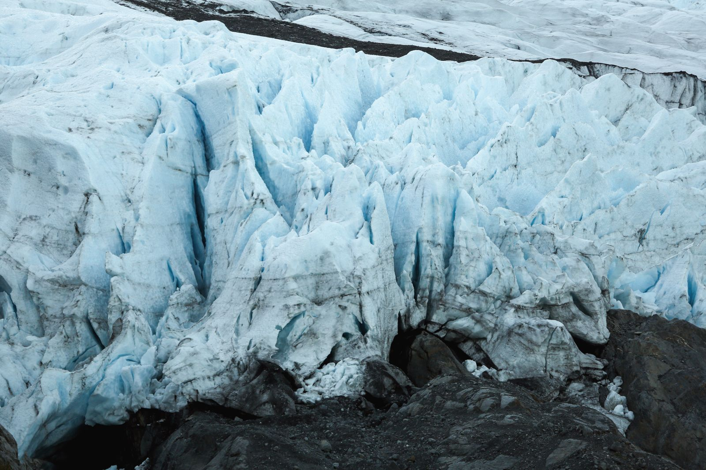

The scientist
FREYA NILSEN · PHD 2012
I came to ice cores through a summer job washing sample bottles in a cold lab, and stayed because the archive is unmatched: nowhere else on Earth can you hold the actual air of a past atmosphere in your hand — as bubbles, sealed in ice, countable and measurable.
My doctorate (2012) worked on volcanic dating of Greenland cores. Since then: fourteen field seasons — nine in Greenland, four in Antarctica, one in Svalbard — first as a drill assistant, then running shallow-core programmes, now independent since 2019 as Nilsen Polar. The work splits three ways: fieldwork (getting cores out and home frozen), chronology (making their calendars honest), and interpretation (museums, media and anyone else who has to explain deep time to people who weren't planning to think about it).
The rule I work by, in the field and on the page: report the season you had, not the season you planned. A core that came home at 96 of 120 metres, written up straight, is worth more than a rounded-up story — because the next team's logistics get planned from my numbers.
How the work is done, in plain words
FIELD · LABIn the field
A shallow-core season is a small, cold factory. The drill goes down in runs of about a metre; each section is drawn up, measured, logged and packed before the next run, because a core out of order is a calendar out of order. We work to weather rules agreed before the season starts — wind limits for drilling, whiteout rules for travel — and the rules win arguments. Everything runs on the season's scarcest resource, which is never money: it is flyable days.
In the lab
Four measurements do most of the work. Continuous-flow analysis melts the core slowly past a bank of detectors, giving an unbroken chemical record. Ion chromatography counts sulfate and nitrate — the sulfate spikes are the volcanic mileposts. Isotope ratios (δ¹⁸O, the balance of heavy and light oxygen in the water itself) track the temperature the snow fell at. And bubble gas: ice is crushed under vacuum and the freed air — real ancient atmosphere — is measured for CO₂ and methane.
Safety & the ice itself
Antarctic work runs under the Antarctic Treaty's environmental protocol, and I work to its standard everywhere, Arctic included: everything flown in is flown out, fuel is bunded, sites are left as snowfields, not camps. Crevasse country is travelled roped, with rescue rehearsed before the first drill run — not after the first incident. A season that ends early for safety is a successful season.
How results are published
Peer review first, press release second — never the other way round. Datasets go into open repositories with the timescale and its uncertainties attached, so another team can check the calendar rather than trust it. And a season that fails is written up too: the 96-metre season is in the register on the home page, not in a drawer. Negative results are how the next budget gets spent honestly.